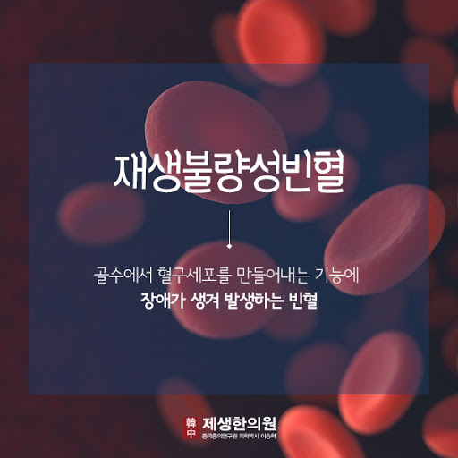
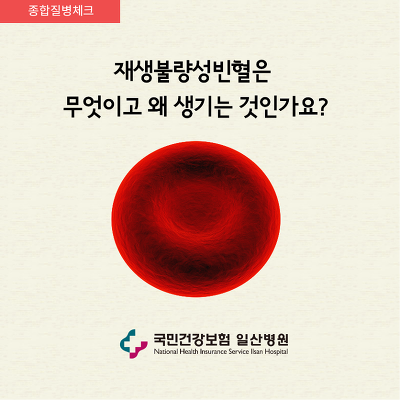

의사 칼럼 모음
- 전문 의사 작성
- 칼럼 모음
{% for board in boards.all %}
{% if board.pro == True %}


{{ board.pub_date }}
{% endif %}
{% endfor %}
- {{ board.title }}
- 재빈닥터
{{ board.pub_date }}
- 제대혈이식에 관한 올바른 이해
- 재빈닥터

- 재생불량성 빈혈에서의 T세포 제거
- 재빈닥터
- 조혈모세포이식 과 골수이식종류
- 재빈닥터
재빈이야기 자유게시판
| 번호 | 제목 | 작성자 | 작성일 | |
| {{ board.id }} | {{ board.title }} | 작성자 | {{ board.pub_date }} | |
| 9 | 면역 치료 후 첫 외래 | 갸르미 | 20.04.13 | 182 |
| 8 | 이식 +19 골수검사 퇴원이야기 | 유니혀니맘 | 20.04.13 | 219 |
| 7 | 무균실 탈출... | 빼짱 | 20.04.11 | 214 |
| 6 | 이식이후 백일 | skyhyun | 20.04.10 | 276 |
| 5 | 이식 14일째 드디어 꿈틀 간정맥폐쇄증 의심 | 유니혀니맘 | 20.04.08 | 297 |
| 4 | atg 어제부로 끝났네요. | 갸르미 | 20.04.07 | 193 |
| 3 | 4월 1일 이식합니다. | 빼짱 | 20.03.28 | 301 |
| 2 | 일년만에 들어왔네요. 반일치이식 4년차 | 안녕 | 20.03.19 | 403 |
| 1 | 딸아이 전처치 2일차 지났어요 | 유니혀니맘 | 20.03.17 | 330 |